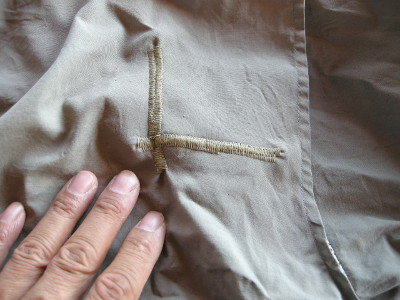
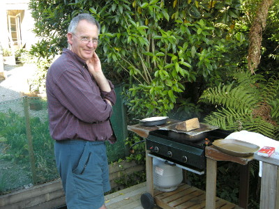
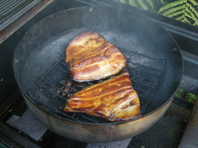

釣行日誌 ＮＺ編 「翡翠、黄金、そして銀塊」
レインボーの燻製、切り身４枚
2010/12/03(FRI)-2
昼寝から起き出して居間へ行くと、ブリントさんが町の図書館へ行くから着いてこいと言う。トヨタに乗り込んで図書館に着くと、こぢんまりとした建物であったが、アットホームな感じのする良い雰囲気だった。ブリントさんは、以前借りてとても面白かったＤＶＤがあるので、それをまた借りて見せてやろうと言った。棚には映画、ドキュメンタリーなどなかなか充実したＤＶＤのラインナップが備えられていた。
数枚を借りて家へ戻り、ブリントさんの作業場横の事務室兼タイイングルームに置かれた大画面のｉＭａｃで鑑賞した。お勧めの１枚の内容は、ハンティングのターゲットとしてイギリスやスコットランドからニュージーランドに移入されたシカが野生化・繁殖拡大し、1950年代頃にはとうとう害獣として問題視されるようになったのを、特殊な射出式捕獲網をヘリコプターから発射して生け捕りにして牧場に連れ帰り、食肉用に放牧を始める、というものだった。試行錯誤して失敗の連続だった捕獲網の開発から、迫力ある生け捕りシーンの空撮、シカ牧場の発展過程など、とても興味深いプログラムであった。
＜後日、ウィキペディアで調べてみると、ニュージーランドは牧場産シカ肉の供給量が世界最大であり、最先端のシカ養殖を行っているとのこと。この日見たＤＶＤは、シカ肉産業の黎明期を描いたものだったようだ。＞
２枚目のプログラムは、The Source - New Zealand というニュージーランドのフライフィッシングについて描かれたものであった。ジン・クリアーというワクワクするような名前の会社から販売されているそのＤＶＤは、この国のフライフィッシングの素晴らしさをあますところなく伝える最高の出来であった。おそらくは膨大な時間をかけて撮影したであろう数々の衝撃的ストライクシーンが連続し、ブリントさんですら見ていて興奮すると言った。通販でも買えるようなので、興味のある方はぜひどうぞ。ＤＶＤのリージョンコードについては先方にご確認をお願いします。
ＤＶＤを２本見た後は、また睡魔に襲われ、ベッドで昼寝をした。眠っている間に、裁縫仕事の上手なグレースさんが、僕のお気に入りのフィッシングシャツのかぎ裂きを見つけ、ミシンで補修してくれていた。実にありがたかった。

彼女は、キウィのご婦人らしく、ＤＩＹの精神に溢れており、子供達やブリントさん用にフリースの防寒着などを手作りしたり、家庭で必要な小物を布とミシンでいろいろと製作している。1998年の釣行時にも、僕と友人の川本君のために、暖かな厚手フリース生地のベストを作ってくれた。僕は感謝の意味を込めて、その時のフリースベストを今回もパックして来たのである。
夕方からは、バルコニーでブリントさんの燻製作りを手伝った。湖で仕留めた太っちょレインボーを切り身にして、塩で下味を付け、ブラウンシュガーをたっぷりとまぶしてから浅型の鍋に入れ、バーベキュー用のガスコンロで燻した。専用の燻製器ではないが、その味の見事さは、先日までのサウスウェストランド遠征で十二分に味わっている。チップにどんな木を使っているかは聞くのを忘れた。


およそ１時間ほどの燻蒸で出来上がったレインボーの燻製、切り身４枚は、冷ましてから丁寧に幾重にもビニール袋に包んで冷蔵庫にしまってくれた。明後日、オークランドに住む留学生時代のホストマザー、ジョー・ハーマン夫人への貴重なお土産が出来た。
夕食はレタスとトマトのサラダ、茹でポテト、茹で卵、ブロッコリー、ベニスン（シカ肉）のソーセージをいただいた。シカ肉産業のＤＶＤを見たので、ソーセージの味が少し深まったような気がした。
明日はいよいよ最後の釣行だ。気合いを入れてから、ぐっすりと眠った。
釣行日誌ＮＺ編 目次へ
サイトマップ
ホームへ
お問い合わせ